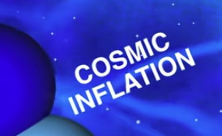
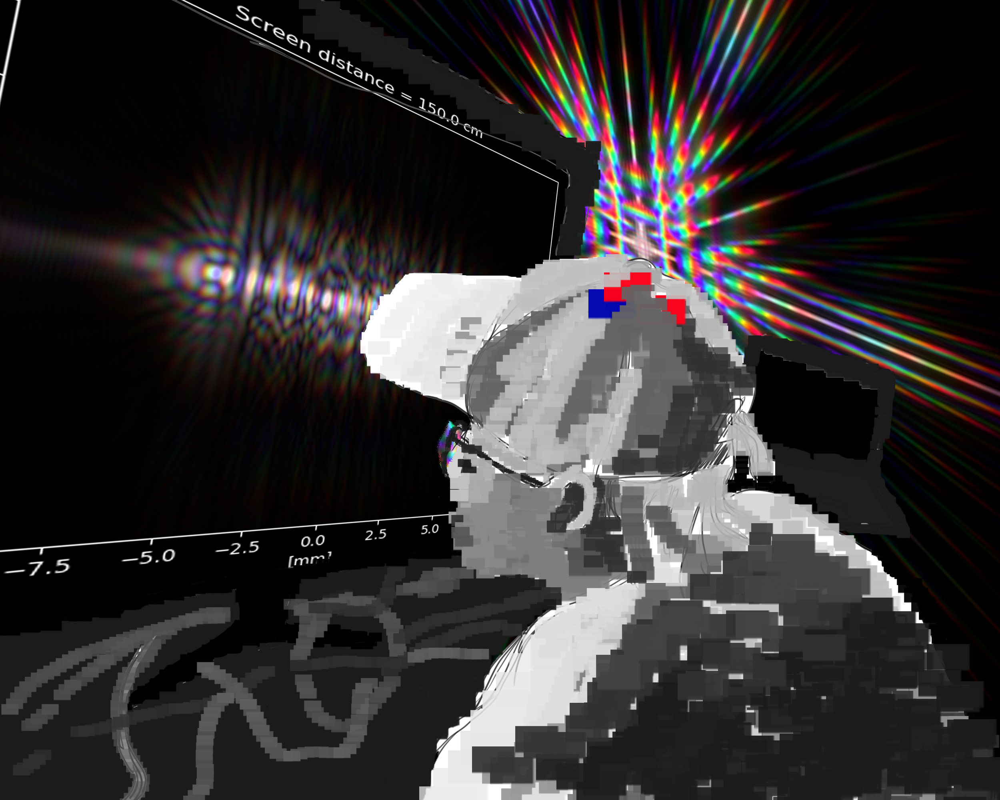
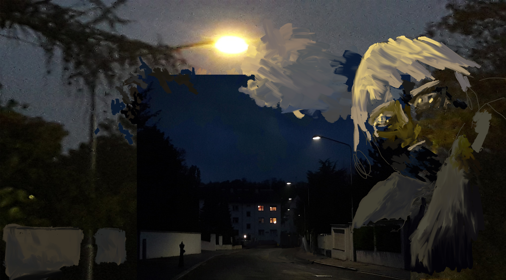

Update 05.02.2026: added kp1 final
currently listening to:
LINKS + things

(blender) leto na betóne (summer on concrete)
(website, p5js) in lockstep :
light-weight website about EM waves, EM induction
(interactive installation, pair-work) Riekanka :
Interactive projection using sound of the surrounding space to modulate water surface from which light is reflected.
(public installation, video) Nonsensical sensemaking :
Placing scientific diagrams adapted from early ML milestone publications, like Perceptron into public space today. Some great imagination and human effort starting in the 60s got us to some strange and unhelpful nonsense today.
(website) Spectral map of street light in Bratislava decomposed light, exploring the quality of space at night in differnet light
The website maps street lighting on a circuit in Petržalka (a district in Bratislava). Together with the photodocumentation of each lamp and its surroundings, the colour spectrum of the lamp is recorded via a borrowed spectrometer Luminy (myspectral.com). The characteristic orange light of the street comes from sodium-vapor lamps, which are slowly disappearing from Bratislava.
Erker open call #2 on fall, new spaces and adjustements.
Panelak project, draft version ! Panelák
Radical Imaginaries: Taraba(2023)
Last name of a Slovak right-wing nationalist politician, who found himself as the Minister of Environment. One very hot June day, as I was walking home from the library, I had a moment of radical imagination that imagined him thinking about things.
Erker open call my webzine on things I've been thinking of at the end of the summer.
sketches and grafiks from 2025 , updating slowly
sketches and grafiks from sept-oct 2024
(spatial installation) Protest
This work was installed across the river from the Slovak Parliament. Protest as the otherworldly yelling in Casbah during the French occupation. Protest as the strange, upsetting twinkling in the corner of the eye – ceaseless truth of existence.
(composite of thoughts and images) Shelly

sketches/drawings ('24) sketches/drawings ('23)sketches/drawings ('22ish) sketches/drawings ('21 annd older)curbside physics Mostly exports of side-notes from lectures, sketchbooks, etc. on physics.
video reflection on movement 47 seconds of removing cars
cycle project (work in progress)
Interactive website (DEPRECATED website) of urban cycling in Bratislava, collaboration with my brother
Cycling video, part of exploring the format and possibilities of the project.
the one actual sketchbook entry:

(python library for the diffraction patterns: https://github.com/rafael-fuente/diffractsim)
It's a bit refreshing to be so busy, at the same time I find myself in brief moments of intermission. (Pötzleinsdorf) .

VŠVU app
Completed prompt "interface" for my winter '21 application to the Digital Arts programme at Academy of Fine Arts and Design in Bratislava (AFAD/VŠVU).
Koľko ľudí stretne človek za život? Kto je a kým pre koho? A to kto je, nikto nevie. Rovnaký ako všetci ostatní, vždy sám.
Určite sú ľudia jednou z najdôležitejších častí života. Neustále sa ovplyvňujeme, máme radi, komunikuje, spolunažívame, ale nikdy sa naozaj nestretneme. Celý život jeden okolo druhého oscilujeme a priťahujeme sa. Čím bližšie sa k sebe však dostaneme, tým viac zistíme, že sa jeden druhého nikdy ozajstne nedokážeme dotknúť. Od istého bodu sa rovnako ako častice viac nevieme priblížiť, ani nie vôľou, ale len kvôli vrodene inherentnej ľudskosti. Dokáže nadviazať spojenie, vymieňať si medzi sebou informácie, nikdy však nedokážeme prekročiť dané rozhranie. Toto ľudské rozhranie: napriek tomu, že sme všetci rovnakí, sme vždy sami; je skoro ako kebyže, sme boli raz dávno za niečo potrestaní. A preto, dnes viac, ako možno hocikedy predtým, každý rozumieme tejto inherentne ľudskej diskrétnosti, avšak rovnako sa stále neúnavne snažíme toto rozhranie prekročiť.
Stránka je hostovaná pomocou github pages, programovaná s pomocou Sass extension pre css. Js je použitý pre hornú sínusoidovú animáciu. Fotky sú z vlastnej tvorby, Tokyo 2019, Viedeň 2021, Londýn 2021, podľa poradia. Ilustrácie, kresba a konečná animácia je robená v Adobe Photoshop.